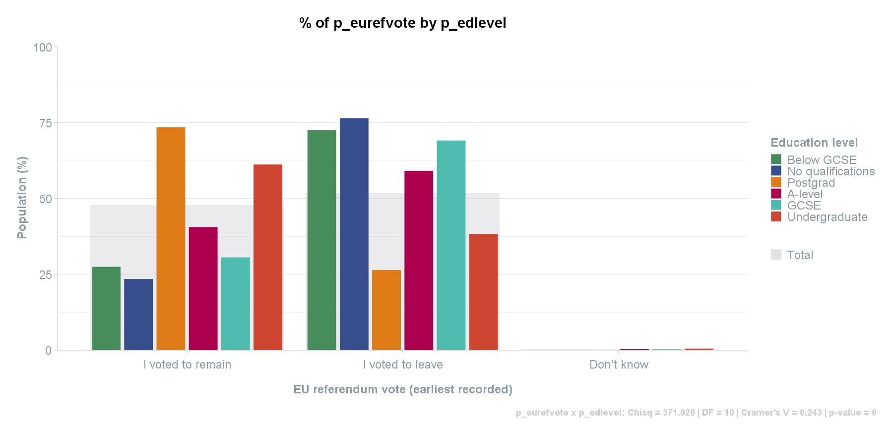

Overview
scgUtils is a comprehensive R package designed to streamline the process of survey data analysis and visualisation. It offers a range of functions for data processing, exploration, and stylish visualisations, adhering to branding guidelines with custom colour schemes and themes.
Features
-
Survey Data Processing: Simplify the manipulation of survey datasets with functions like
get_data()andprocess_factors(). -
Data Exploration Tools: Dive into your data using functions such as
crosstab()andgrp_freq()for detailed analyses. -
Custom Visualisations: Bring your data to life with various plotting functions, from
plot_parliament()for election outcomes toplot_sankey()for flow data representation. -
Styling and Brand Consistency: Maintain brand integrity with
colour_pal()andtheme_scg(), ensuring consistent and appealing data presentations.
Usage
Here’s a quick example of using scgUtils to analyse and visualise survey data:
# Load sample data
df <- get_file("inst/extdata/survey.sav")
# Explore data with a crosstab
crosstab(data = df,
rowVar = "p_eurefvote",
colVar = "p_edlevel",
weight = "wt",
format = "df_wide",
round_decimals = 2,
statistics = TRUE,
plot = TRUE
)
# [1] "p_eurefvote x p_edlevel: Chisq = 371.026 | DF = 10 | Cramer's V = 0.243 | p-value = 0"
# p_eurefvote Undergraduate A-level Below GCSE GCSE No qualifications Postgrad Total
# 1 I voted to remain 61.23 40.58 27.47 30.60 23.49 73.47 47.92
# 2 I voted to leave 38.25 59.12 72.53 69.13 76.51 26.42 51.78
# 3 Don't know 0.52 0.30 0.00 0.27 0.00 0.10 0.31
Feedback and Contributions
Suggestions and contributions are welcome. For any proposed additions, amendments, or feedback, please create an issue.
Related Packages
Check out scgElectionsNZ for additional datasets relevant for NZ General Elections.